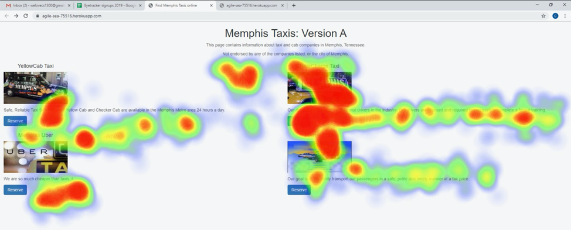
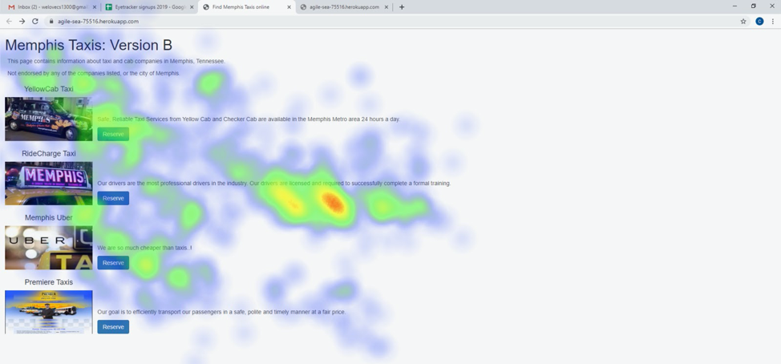

A/B Testing
Memphis Taxis
 We were tasked with creating an improved version of a fake website for Memphis Taxis. Taking into account affordances and usability, we created two new versions of the website. In order to test the designs, we used quantitative (A/B testing) and qualitative (eye-tracking) methods.
Our Hypotheses
Click Through Rate
Null Hypothesis: The click through rate for design A and design B will not be significantly different.
Alternative Hypothesis: The click through rate for B will be higher than A because the list style layout of B offers a hierarchy encourages users to explore and compare the individual elements and services.
Time to Click
Null Hypothesis: The mean time to click for both version A and version B are not significantly different.
Alternative Hypothesis: The mean time to click for version B will be lower than that of A because the list style of version B encourages users to explore one option at a time.
Dwell Time
Null Hypothesis: The mean dwell time for version A and version B are not significantly different.
Alternative Hypothesis: Version A will have a longer dwell time than version B because, in Version A, all options are laid out in a grid that the user can briefly process all at once, and then click on an option and learn more there, rather than stay and read the descriptions on the page itself.
Return Rate
Null Hypothesis: The return rate for Version A and Version B are not significantly different.
Alternative Hypothesis: Version B will have a higher return rate than version A because the list format of version B has the user process one option at a time meaning each user will have to return to the initial page after leaving to read through the other options.
Analyzing our data
Once we formulated our hypotheses, we sent out our redesigned website for people to try. Users were shown either version A or version B.
Once we calculated each metric, we used test statistics to determine their statistical significance. We chose between a chi-square test or a t-test.
For click through rate we decided to use the chi-square test because we are comparing categories of users, i.e. those who clicked on links and those who didn’t.
For time to click we decided to use the t-test because we are comparing the difference in means of how long before a user makes a first click on version A vs. version B.
For dwell time we decided to use the t-test for similar reasons - we are comparing the difference in means of how long each unique session leaves the page and then returns.
For return rate we decided to use the chi-square test because we are comparing categories of users, i.e. those who returned and those who didn’t.
P-Value Interpretations
Unfortunately, for all four metrics, the test values calculated were lower than their P-values. Thus, none of our results are statistically significant and we fail to reject the null hypothesis in all four cases. We can conclude that for all four metrics, version A and version B are not significantly different
Eye Tracking Hypothesis
After measuring quantitative data using A/B testing, we used an eye-tracker to collect qualitative data. We hypothesized that version A will have more eye gazes scattered across the screen since the grid layout should encourage a brief process of all the options. Version B will have a greater portion of eye gazes on each of the items, as the list format encourages users to read through the options.
Visualization Interpretation
Given the data above, it appears that our hypothesis was incorrect, and in fact, that the opposite may be true. In the heatmap for version A, each element received a strong concentration of gazes, while for version B, there is a light scatter of gazes across each element, implying a brief analysis of each element. However, we acknowledge that a sample size of two users is rather small, and perhaps not representative of all users.
Comparison
After collecting and analyzing both quantitative and qualitative data, we were able to make final comparisons across the two versions.
Design Suggestions
Version A seems to be a better design for the website. From the eye-tracking data, it seems that Version A encourages equally distributed portions of time looking at each element of the website, which should discourage bias in choosing one taxi service over another. However, we recommend conducting more A/B testing before deciding on any major redesign of the website, as none of the A/B testing results were statistically significant. We also recommend doing more in-depth eye-tracking research in order to develop personas that could bolster future redesigns and testing.
Comparing Research
The time to click metric seems to contradict the eye-tracker data, given the strong “heat” present on each element of version A, despite its time to click being lower than version B’s.
Eye-tracking and A/B testing complement each other in their advantages and disadvantages. Eye-tracking demonstrates how noticeable each element is, which is very informative when supplemented by respective click-through rates. However, eye-tracking fails to capture more concrete user engagement (i.e. even if something is eye-catching, users may not know how to engage with it), so eye-tracking alone could lead to false conclusions on the effectiveness of the design is. On the other hand, A/B testing succeeds at measuring the overall basics of user-engagement, but is more likely to fail at demonstrating why a user isn’t engaging with the site as intended.